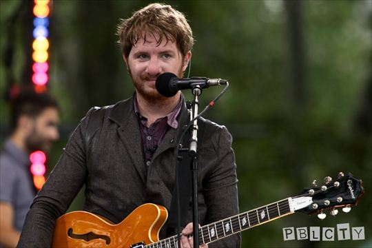

Andrew John "Drew" Brown se narodil 9. ledna 1984. Pochází z Broomfield v Coloradě. Už od mládí byl nadějným muzikantem, pracoval v Peter Walsh's Big Dog Deli. V roce 2004 se přestěhoval do Los Angeles, kde se přidal k Ryanovi, kterého v té době podporoval producent Timbaland. Je známý především jako kytarista a klávesista skupiny OneRepublic. Pracuje ale i na dalších hudebních projektech. OneRepublic se mu snaží vyjít vstříc a nechává mu prostor pro práci s jeho vedlejší kapelou Debate Team.
